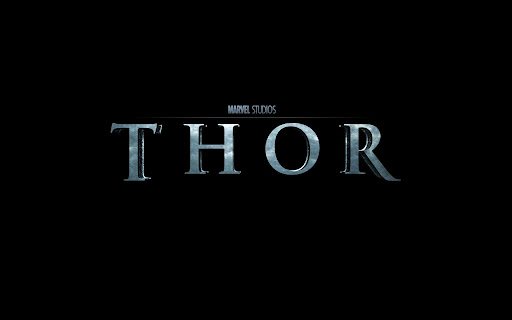

Тор Одінсон (англ. Thor Odinson) — вигаданий персонаж, супергерой з коміксів американського видавництва Marvel Comics. Персонаж створений на образі однойменного бога з германо-скандинавської міфології. Бог грому з Асґарду, чий зачарований молот Мйольнір дозволяє йому літати і керувати погодою, серед інших надлюдських якостей. Один із засновників команди супергероїв Месників, Тор має безліч допоміжних персонажів і ворогів. Його творцями були — редактор Стен Лі, сценарист Ларрі Лібер і художник Джек Кірбі, перша згадка про нього — у коміксі Journey into Mystery (серпень 1962), який пізніше перейменували на The Mighty Thor.
Вигадана біографія 1960-тіТор — кровний син Одіна, Всебатька асґардійців, і Йорд, яка була також відома як Гея, богиня землі, яка була одною зі Старших богів[5]. Одін стверджував, що він хотів народити сина, сила якого походила б як від Асґарду, так і від Мідґарду (так асґардійці називають царство землі). Одін створив печеру в Норвегії, де Йорд народила Тора[6]. Через кілька місяців після того, як немовля відлучили від грудей, Одін приніс його в Асґард на виховання. Дружина Одіна, богиня Фріґґа, з того часу стала матір'ю Тора, і протягом багатьох років Тор вважав її своєю біологічною матір'ю. Лише через багато століть Тор дізнався правду про те, що Йорд була його біологічною матір'ю[7][8]. Батько Тора Одін вирішує, що його сина потрібно навчити смиренності, тому відправляє та перевтілює Тора (без спогадів про божествене походження) на Землі у смертного студента-медика Дональда Блейка[9]. Ставши лікарем, Блейк стає свідком прибуття інопланетного розвідувального загону під час своєї відпустки в Норвегії. Блейк тікає від прибульців у печеру. Знайшовши молот Тора Мйольнір (замаскований під палицю) і вдаривши ним по скелі, він перетворюється на бога грому[10]. Пізніше, у Thor #159, Блейк дізнається, що завжди був Тором, а чари Одіна змусили його забути свою історію як бога грому і повірити в себе смертним[11]. Перемігши прибульців, Тор живе подвійним життям зі своїм альтер-его: лікує хворих у приватній практиці з медсестрою — і, зрештою, коханою дівчиною — Джейн Фостер, і захищає людство від зла. Присутність Тора на Землі майже одразу привертає увагу його прийомного брата і ворога Локі[12][13]. Локі відповідальний за появу трьох головних ворогів Тора: Поглинача[14][15], Руйнівника[16][17] і Нищителя[18]. Одного разу тактика Локі випадково виявилася успішною — хоча йому вдалося використати ілюзію Галка, щоб втягнути Тора в бій, це призвело до формування команди супергероїв Месників, членами якої стали Тор, Галк, Людина-мураха, Оса і Залізна людина[19]. Серед інших ранніх ворогів Тора — Заррко, Людина завтрашнього дня[20]; Радіоактивна людина[21][22]; Лавова людина[23]; Кобра[24]; Містер Гайд[25]; Чарівниця, Кат[26][27] і Сіра Гаргулья[28]. Закохавшись у Джейн Фостер, Тор не слухається батька і відмовляється повертатися в Асґард, за що його кілька разів карають[29]. Зрештою виявляється, що природна спорідненість Тора з Землею пояснюється тим, що він був сином старшої богині Геї[30]. Хоча Тор спочатку вважає себе «супергероєм», як і його товаришів з команди Месників[30], підступність Локі втягує Тора у все більш епічні пригоди, такі як об'єднання зі своїм батьком Одіном та Бальдром проти вогняного демона Суртура та штормового велетня Скаґґа[31], а також битва з дедалі могутнішим Поглиначем, доведення своєї невинності на Суді Богів[32], що викликає потребу у тривалій відпустці у складі Месників[33]. Тор зустрічає грецького бога Геркулеса[34][35], який стає його вірним і надійним другом. Тор рятує його від іншого олімпійця Плутона[36]; зупиняє наступ Еґо — Живої планети[37][38][39]; рятує Джейн Фостер від Вищого еволюціонера і перемагає його недосконале творіння, Людину-звіра[40][41]. Одін нарешті змиряється і дозволяє Тору кохати Джейн Фостер, але за умови, що вона пройде випробування. Після того, як Фостер провалює випробування, Одін повертає її на Землю, де вона отримує ще один шанс на кохання, в той час як розбитий горем Тор знайомиться з асґардійською воїтелькою леді Сіф[42][43]. Тор вперше б'ється з асґардійським тролем Уліком, коли Улік намагається викрасти Мйольнір[44]. Бог грому повертається до Асґарду, щоб завадити Манґоґу витягти меч Одіна і покласти край всесвіту[45], Тор дізнається про походження Ґалактуса[46] і рятує Сіф після того, як вона була викрадена ним[47][48]. 1970-ті Тор знову бореться з Суртуром, коли демон намагається штурмувати Асґард; стикається з Чужинцем та його пішаком Огидою; перемагає Доктора Дума. Тор запобігає черговій спробі Манґоґа, замаскованого під Одіна, викрасти меч Одіна. У довгій сюжетній лінії Тор зустрічається з Вічними[56][57]. Тор також стикається з «Оком Одіна» (принесеним Одіном в жертву, щоб випити з Колодязя Міміра), який стверджував, що колись існував інший Асґард та інша версія Тора[58]. 1980-ті Тор врешті-решт протистоїть загрозі Небесного четвертого воїнства і після тривалої серії зустрічей дізнається про справжнє походження Асґарду та плани Одіна захистити Землю від інопланетних суддів. Незважаючи на спробу Одіна зупинити небожителів, зайнявши обладунки Руйнівника (тепер висотою 2000 футів, в яких міститься життєва сутність кожного асґардійця) і володіючи мечем Одіна (за допомогою Єдиного розуму, сутності, що складається з Вічних) і самого Тора, прибульці відлітають, коли Гея від імені Небесних матерів (наприклад, Фріґґи і Гери) приносить їм у жертву дванадцять досконалих людей. Тор також дізнається, що Гея була його біологічною матір'ю[59]. Після відновлення асґардійських богів за допомогою енергій, пожертвуваних Небесними батьками з інших пантеонів[60], Тор переживає низку пригод на Землі, серед яких зустріч з двома вісниками Ґалактуса, що йдуть один за одним[61][62]; перемога над Мефісто, який забирав людські душі[63]; очищення свого імені, коли його підставив асґардійський бог війни Тір[64][65]; допомагає Драксу Руйнівнику[66]; разом із союзником Залізною людиною перемагає Бі-звіра та Людину-звіра[67][68][69]; бере участь у битві з колишнім королем Настронду Фафніром, перетвореним Одіном на дракона, коли його звільнив Локі[70], а також бореться з Дракулою[71][72]. Тор дізнається про існування Пожирача богів — істоти, що з'являється, коли боги смерті кількох пантеонів тимчасово об'єднують свої царства. Тор зупиняє істоту, яка виявляється людиноподібним Атумом, сином Геї, а отже, зведеним братом Тора, і забезпечує відновлення космічної рівноваги[73]. Досліджуючи космічний корабель, що наближається на прохання Ніка Ф'юрі, Тор стикається з Бета-Рей Біллом[74], який після короткого бою довів, що гідний підняти молот Тора — Мйольнір. Після початкових непорозумінь Білл укладає союз з асґардійськими богами і отримує від Одіна повноваження допомогти Тору та його союзникам у війні з армією демонів[75], що наближається, яку, як виявилося, очолює демон вогню Суртур. Після низки тривалих битв — включаючи битву на смерть з Фафніром і відсіч темному ельфу Малекіту — боги нарешті тріумфують, хоча під час битви Одін і Суртур зникають через розлом і вважаються загиблими[76][77]. Тор залишається в Асґарді, щоб розібратися з вакуумом, який утворився після очевидної смерті Одіна, і виганяє Гелу[78]; зустрічає Тіваза, свого прадіда[79][80]; змушує Локі вилікувати його від дії любовного зілля[81]; з союзниками проникає в царство Гели і рятує загублені смертні душі[82]. Повернувшись на Землю, Тор і Бета-Рей Білл перемагають перетвореного темного ельфа Курса[83], хоча Локі використовує силу викинутого меча Суртура, щоб перетворити Тора на жабу. Після пригоди в Центральному парку Тору вдається частково відновити себе, а потім змусити Локі скасувати закляття[84][85][86].